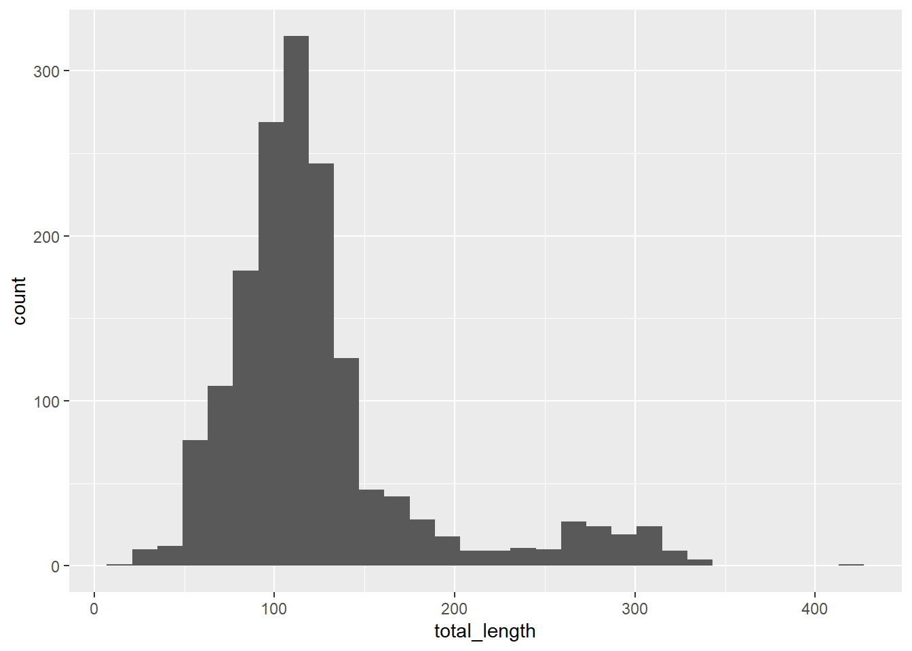
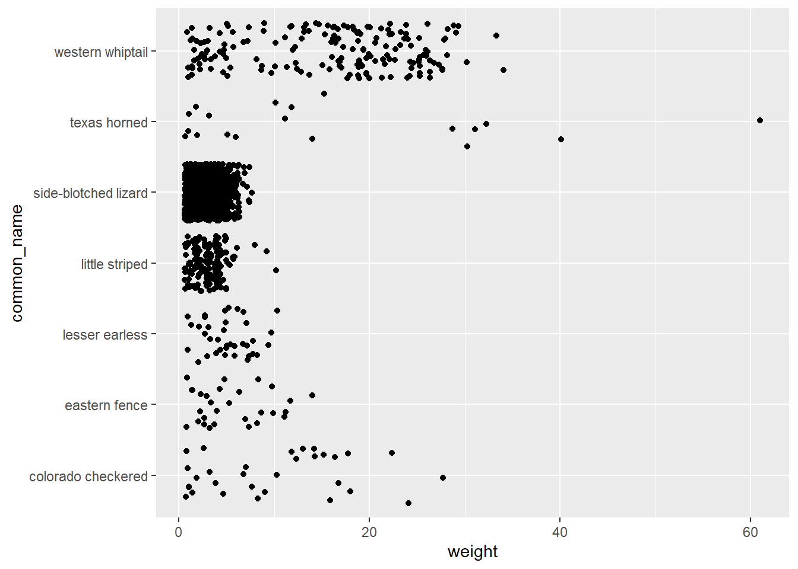

Rows: 1628 Columns: 16
── Column specification ────────────────────────────────────────────────────────
Delimiter: ","
chr (10): date, scientific_name, common_name, zone, site, plot, spp, sex, rc...
dbl (6): pit, toe_num, sv_length, total_length, weight, pc
ℹ Use `spec()` to retrieve the full column specification for this data.
ℹ Specify the column types or set `show_col_types = FALSE` to quiet this message.
#example of a good graph that is easy to readggplot(data = lizards, aes(x = total_length, y = weight)) +geom_point()
#exampel of a bad oneggplot(data = lizards, aes(x = total_length, y = weight)) +geom_line()
`stat_bin()` using `bins = 30`. Pick better value with `binwidth`.

#jitter plots use one categorical and one continuous numericalggplot(data = lizards, aes(y = common_name, x = weight)) +geom_jitter()

Aesthetic mapping
fill: updates fill colors (columns, density, violin and boxplot interior color)
color: updates point & border line colors
#shape: update point style # alpha: updates transparency # size: point size or line width # linetype: update the line by referring to a constant value THIS SHOULD NOT BE WITHIN THE aes()